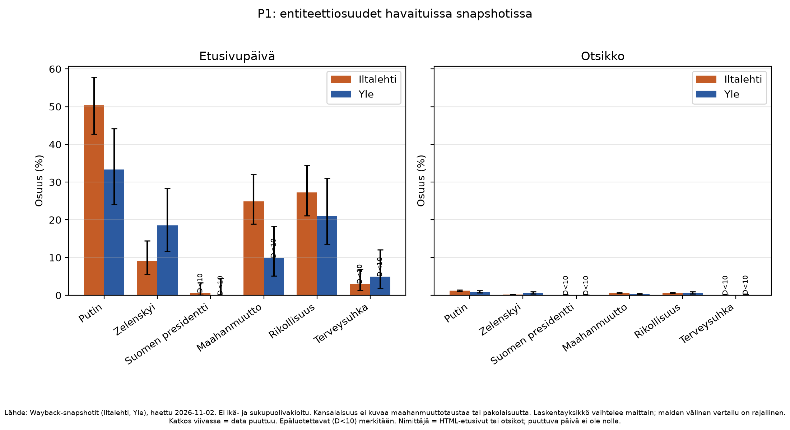
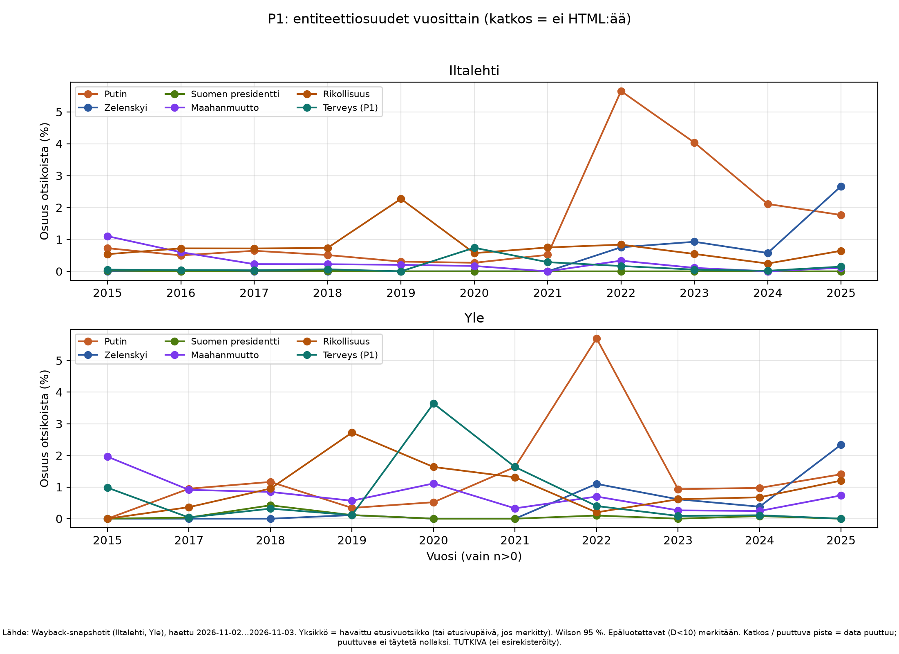
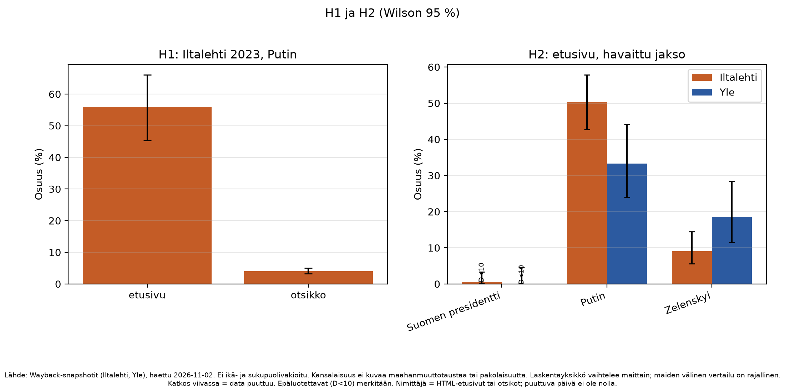
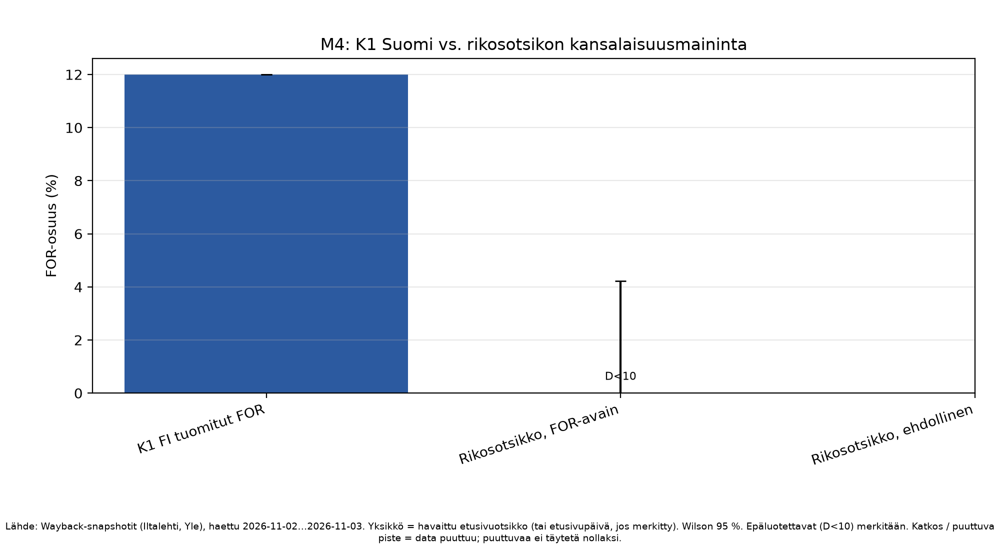

Raportti: mediahaara (Iltalehti, Yle), 2015–2025
Esirekisteröinti: MEDIA_PREREGISTRATION.md (2026-11-01).
Aineisto: Wayback CDX ja HTML-snapshotit (haettu 2026-11-02); K1-osuus M4:ssä Eurostat crim_just_ctz / migr_pop5ctz (haettu 2026-11-01).
Kaikki luvut ovat taulukoista media/output/tables/ ja output/tables/asteet.csv. Puuttuva = tyhjä / NaN, ei täyttöä.
Tämä tulososio ei sisällä tulkintaa. Tulkinta on osiossa 10.
Mediat (vain vaiheessa 1 vastanneet URL:t): iltalehti_etusivu (www.iltalehti.fi/), yle_uutiset (yle.fi/uutiset). Kalenteri: 2015-01-01 … 2025-12-31 (4018 päivää / media). Muita medioita tai maita ei ole.
1. Peitto (vaihe 2)
Lähde: coverage_media_yhteenveto.csv. CDX collapse=timestamp:8 (ensimmäinen osuma päivältä). Puuttuva päivä on puuttuva.
| media | n_paivaa | n_cdx | n_cdx_200 | n_puuttuu_cdx | n_puuttuu_200 |
|---|---|---|---|---|---|
| iltalehti_etusivu | 4018 | 3286 | 3159 | 732 | 859 |
| yle_uutiset | 4018 | 3741 | 3686 | 277 | 332 |
RSS (2026-11-02): ei historiaruudukossa. GDELT, Media Cloud ja Yle-artikkeli-API: ei aineistossa.
2. Esikäsittely (vaihe 3)
Lähde: tietueet_yhteenveto.csv. HTML Wayback-snapshotit; otsikot etusivun merkeistä, ei <title> / og:title.
| media | n_paivaa | n_tiedosto | n_otsikko_paiva | n_otsikkoa | n_ilman_otsikkoa |
|---|---|---|---|---|---|
| iltalehti_etusivu | 4018 | 165 | 165 | 10545 | 0 |
| yle_uutiset | 4018 | 81 | 81 | 3526 | 0 |
HTML-vuodet, joissa on otsikoita: Iltalehti 2015, 2016, 2023; Yle 2015, 2023. Muut kalenterivuodet: ei HTML:ää, ei nollaosuutta.
Entiteetti = merkkijono-osuma M1-avaimista. aihe ja savy koko ruudukossa tyhjiä.
3. Koodaus (vaihe 4)
Lähde: koodaus_yhteenveto.csv. Siemen 20261103. Otos 500 (250 + 250). Ihmiskoodaajia: 0. Ihmis-α: tyhjä.
Sääntö-α (TUTKIVA, ei ihmisvalidointi): aihe 1,00; sävy 1,00 (vain parit, joissa molemmilla luokka; n=7). Sävyn F1 v1b vs. v1 ei ole 1, koska v1b merkitsee rivejä, jotka v1 jättää tyhjiksi.
Sääntöaihe v1 otoksessa: muu 482; putin 7; rikollisuus 6; zelenskyi 2; maahanmuutto 2; terveys 1; presidentti 0. Sävy v1: tyhjä 493; uhka 5; pelko 2; viha 0.
Automaatiota ei viety koko ruudukkoon.
4. P1 entiteettiosuudet (vaihe 5)
Nimittäjä = havaittu HTML (etusivu, n_otsikkoa>0, tai otsikko). Wilson 95 %. D<10 merkitty. Lähde: p1_entiteetti_osuus_havaittu.csv.

. Vuosittain

(katkos = ei HTML:ää).
Etusivupäivä
| media | ryhmä | x / n | osuus | Wilson 95 % | D<10 |
|---|---|---|---|---|---|
| Iltalehti | Putin | 83 / 165 | 50,3 % | 42,8–57,8 % | ei |
| Iltalehti | Zelenskyi | 15 / 165 | 9,1 % | 5,6–14,5 % | ei |
| Iltalehti | presidentti | 1 / 165 | 0,6 % | 0,1–3,4 % | kyllä |
| Iltalehti | maahanmuutto | 41 / 165 | 24,8 % | 18,9–32,0 % | ei |
| Iltalehti | rikollisuus | 45 / 165 | 27,3 % | 21,1–34,5 % | ei |
| Iltalehti | terveys | 5 / 165 | 3,0 % | 1,3–6,9 % | kyllä |
| Yle | Putin | 27 / 81 | 33,3 % | 24,0–44,1 % | ei |
| Yle | Zelenskyi | 15 / 81 | 18,5 % | 11,6–28,3 % | ei |
| Yle | presidentti | 0 / 81 | 0,0 % | 0,0–4,5 % | kyllä |
| Yle | maahanmuutto | 8 / 81 | 9,9 % | 5,1–18,3 % | kyllä |
| Yle | rikollisuus | 17 / 81 | 21,0 % | 13,5–31,1 % | ei |
| Yle | terveys | 4 / 81 | 4,9 % | 1,9–12,0 % | kyllä |
Otsikko (pääyksikkö S1:ssä)
| media | ryhmä | x / n | osuus | Wilson 95 % | D<10 |
|---|---|---|---|---|---|
| Iltalehti | Putin | 126 / 10545 | 1,19 % | 1,00–1,42 % | ei |
| Iltalehti | Zelenskyi | 17 / 10545 | 0,16 % | 0,10–0,26 % | ei |
| Iltalehti | presidentti | 1 / 10545 | 0,01 % | 0,00–0,05 % | kyllä |
| Iltalehti | maahanmuutto | 73 / 10545 | 0,69 % | 0,55–0,87 % | ei |
| Iltalehti | rikollisuus | 66 / 10545 | 0,63 % | 0,49–0,80 % | ei |
| Iltalehti | terveys | 5 / 10545 | 0,05 % | 0,02–0,11 % | kyllä |
| Yle | Putin | 32 / 3526 | 0,91 % | 0,64–1,28 % | ei |
| Yle | Zelenskyi | 21 / 3526 | 0,60 % | 0,39–0,91 % | ei |
| Yle | presidentti | 0 / 3526 | 0,00 % | 0,00–0,11 % | kyllä |
| Yle | maahanmuutto | 11 / 3526 | 0,31 % | 0,17–0,56 % | ei |
| Yle | rikollisuus | 21 / 3526 | 0,60 % | 0,39–0,91 % | ei |
| Yle | terveys | 4 / 3526 | 0,11 % | 0,04–0,29 % | kyllä |
Vuosirivit: p1_entiteetti_osuus.csv (kaikki mediat, kaikki vuodet, joilla n>0).
5. H1–H7
Lähde: h1_h7.csv. Kaavio H1/H2

| H | Tila | Tulos |
|---|---|---|
| H1 | laskettu | Iltalehti 2023, Putin, etusivu: 47 / 84 = 56,0 % (45,3–66,1 %). Otsikko: 74 / 1833 = 4,0 % (3,2–5,0 %). 84 päivää ≠ 365. |
| H2 | laskettu | Havaittu etusivu, presidentti vs. Putin vs. Zelenskyi: ks. jakso 4. Presidentti-fraasit D<10. |
| H3 | ei testattavissa | Ei julkaisijan analytiikkaa. |
| H4 | ei testattavissa | Ei ihmis-sävyn aikasarjaa. |
| H5 | laskettu | Pearson-r kuuden entiteettiosuuden vektoreille, kaksi mediaa: etusivu 0,871; otsikko 0,788 (p4_mediavertailu.csv). Ei maiden vertailua. |
| H6 | ei testattavissa | Ei tuho/tuhoutuminen-luokkia. |
| H7 | ei testattavissa (pää) | Ei aihekoodia 2015–2025. |
P2 pää, P3 ja P5: ei testattavissa (p3_p5_tila.csv). P5:n ulkoiset indikaattorit: M4 on erillinen (jakso 8).
H7 TUTKIVA (ei esirekisteröity)
Entropia ensisijaisesta entiteetistä tai muu, vain vuodet n>0. Lähde: h7_entropia_tutkiva.csv.
| media | vuosi | n otsikkoa | entropia (bitti) | n_luokkaa |
|---|---|---|---|---|
| Iltalehti | 2015 | 3718 | 0,208 | 6 |
| Iltalehti | 2016 | 4994 | 0,165 | 5 |
| Iltalehti | 2023 | 1833 | 0,379 | 6 |
| Yle | 2015 | 102 | 0,218 | 3 |
| Yle | 2023 | 3424 | 0,220 | 6 |
6. Herkkyys S1–S7 (vaihe 6)
Pää = P1 otsikko, havaittu jakso, Wilson, molemmat mediat. Lähde: herkkyys_media_yhteenveto.csv, rivit herkkyys_media_S1_S7.csv.
| S | Vertailu | ero min | ero max |
|---|---|---|---|
| S1 | etusivupäivä vs. otsikko | 0,000 | 0,491 |
| S2 | Yle vs. IL (kumpaakaan ei pudoteta) | −0,004 | 0,004 |
| S3 | vain 2023 vs. havaittu jakso | −0,006 | 0,028 |
| S4 | sääntöaihe vs. entiteetti, otos 500 (TUTKIVA) | 0,000 | 0,000 |
| S5 | tyhjä→neutraali vs. vain merkitty (täyttö ei pää) | −0,704 | 0,000 |
| S6 | pituus ≥40 vs. ≥18 | ≈ 0 | ≈ 0 |
| S7 | Clopper–Pearson vs. Wilson | osuus sama | väli vaihtuu |
7. M4 media vs. K1 (vaihe 7)
Lähde: m4_media_vs_k1.csv, m4_varoitukset.csv.

. Koodikirja: codebook_m4_v1.md.
Vain FI-tuomitut. EU-aggregaatti ei mukana. Yhteiset vuodet (kelpoinen K1 ja rikos-HTML): 2015, 2016, 2023.
| lähde | yksikkö | n | n_FOR | osuus FOR | Wilson 95 % | D<10 |
|---|---|---|---|---|---|---|
| K1 FI | tuomitut | 415860 | 49940 | 12,0 % | ei otanta-CI | ei |
| media | rikosotsikko | 87 | 0 | 0,0 % | 0,0–4,2 % | kyllä |
| media | rikosotsikko, ehdollinen | 0 | 0 | tyhjä | — | kyllä |
Iltalehti 66 rikosotsikkoa, Yle 21; FOR-avaimia 0 molemmissa. Avaimet: NAT suomalais, suomen kansal; FOR ulkomaalais, vierasmaalais. Ei demonyymejä, ei maahanmuuttaja.
8. Poikkeamat esirekisteröinnistä
CHANGELOG.md (media)
- Wayback-HTML on osittainen (IA-yhteydet). Puuttuva päivä tyhjä.
- Ihmiskoodaajia ei ole; ihmis-α tyhjä. Sääntö-α/F1 merkitty tutkiviksi.
- P2/P3/P5 ja H3/H4/H6/H7 (pää) merkitty ei testattaviksi aineiston, ei tuloksen, vuoksi.
- M4: avaimet eivät osuneet 87 rikosotsikkoon; osuus 0 ei ole täyttö. Yksiköt (tuomio vs. otsikko) eivät täsmää.
9. Tiedostot ja toisto
| Polku | Sisältö |
|---|---|
media/output/tables/coverage_media_*.csv | CDX-peitto |
media/output/tables/tietueet_*.csv | etusivu ja otsikot |
media/output/tables/koodaus_*.csv | otos 500 |
media/output/tables/p1_*.csv | P1 |
media/output/tables/h1_h7.csv | H1–H7 |
media/output/tables/herkkyys_media_*.csv | S1–S7 |
media/output/tables/m4_*.csv | M4 |
media/output/figures/01–04 | kaaviot (200 dpi, suomenkieliset alaviitteet) |
output/tables/asteet.csv | K1 (M4) |
Komennot (Python 3.11+, requirements.txt; HTML-snapshotit media/data/raw/snapshots/, git-ignorissa)
python -m src.parse_media --vain-parse(taipython -m src.parse_media --tyot 1jos snapshotteja puuttuu)python -m src.code_mediapython -m src.analyze_mediapython -m src.plot_mediapython -m src.sensitivity_mediapython -m src.m4_mediapython -m src.pages
CDX-indeksi: python -m src.fetch_media. Testit: pytest tests/test_wilson.py tests/test_parse_media.py tests/test_code_media.py tests/test_analyze_media.py tests/test_sensitivity_media.py tests/test_m4_media.py tests/test_krippendorff.py.
10. Tulkinta ja rajat
Tämä osio on erillään tulosluvuista. Data tukee kuvauksia osuuksista havaituissa snapshotissa. Se ei tue motiiveja, lukijavaikutuksia, propaganda-väitettä eikä politiikkajohtopäätöstä.
Mitä luvut kuvaavat
- Etusivupäivän Putin-osuus (50 % / 33 %) tarkoittaa, että kyseisenä arkistopäivänä vähintään yksi poimittu otsikko sisälsi avaimen
putin. Otsikko-osuus (noin 1 %) on eri yksikkö (S1). - H1:n 56 % on 47 päivää 84:stä Iltalehden 2023-snapshotista, ei osuus kaikista vuoden 2023 päivistä.
- H5:n korrelaatio on kuuden osuuden välinen, kahdella medialla. Se ei ole maiden vertailu eikä todiste samasta toimituksellisesta linjasta.
- M4: K1:n 12 % on tuomioiden NAT/FOR-jakauma Suomessa kolmelta vuodelta. Median 0/87 on lukittujen merkkijonojen osuma rikosotsikoissa. Nämä eivät ole sama satunnaismuuttuja. Nolla osumaa ei osoita, että kansalaisuutta ei mainita muilla sanoilla, eikä että media “vastaa” tai “ei vastaa” tilastoa.
- Ihmiskoodauksen puute rajaa sävyn, aiheen ja H4/H7-pään.
Mitä jää avoimeksi: täysi HTML-peitto, kaksi ihmiskoodaajaa, julkaisijan analytiikka (H3), ulkoiset tapahtumaindikaattorit (P5 ilman M4-yksikköeroa), muut mediat ja maat.
Media
The phase-8 report is in Finnish: RAPORTTI_MEDIA.md.
Preregistration 2026-11-01. Outlets: Iltalehti and Yle. Calendar 2015–2025; missing HTML is empty, not zero. Human coding is missing. H3, H4, H6, H7 (main), P2 (main), P3 and P5 are not testable. M4 compares FI convictions with citizenship strings in crime headlines; the units differ. No motives, audience effects, or causal claims.